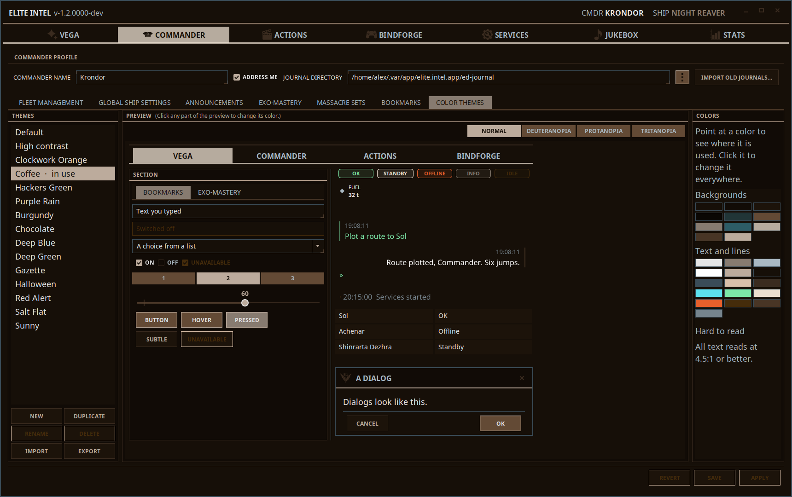
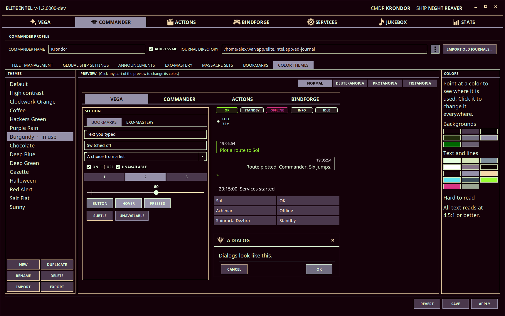
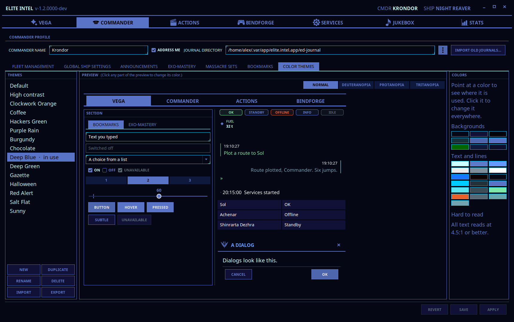

Цветовые темы
Командир → Цветовые темы: цвета, которыми нарисовано окно приложения. Выберите одну из встроенных тем, сделайте свою или загрузите одну из тем ниже.

Стандартные цвета уже подобраны для командиров с нарушениями цветового зрения: зелёный, синий и красный, означающие OK, ожидание и опасность, различимы при самых частых видах цветовой слепоты, а любой текст читается с контрастом не ниже 4,5:1 к своему фону. Если они всё же не подходят вашим глазам или экрану, сделайте свою тему.
HUD-оверлей не входит в тему. У него свои цвета, в его собственных настройках.
Встроенные темы
- Стандартная: подобранные цвета, описанные выше.
- Высокий контраст — для слабого зрения или бликов: чёрный фон, белый текст, более яркие рамки и любой текст с контрастом 7:1 или выше.
- Clockwork Orange — оранжевая, как HUD самой игры и как приложение до V1.2.
- Coffee — тёплые коричневые и кремовые тона.
- Hackers Green — зелёный на чёрном, как старый терминал.
- Purple Rain — фиолетовый на почти чёрном.
- Red Alert — красный на чёрном.
Стандартная и «Высокий контраст» сделаны так, чтобы их было легко читать. Остальные сделаны ради внешнего вида: они не подобраны для нарушений цветового зрения.
Встроенные темы изменить нельзя: первое изменение в такой теме попадает в её копию.
Высокий контраст

Clockwork Orange

Coffee

Hackers Green

Purple Rain

Red Alert

Своя тема
- Нажмите на любую часть предпросмотра, чтобы изменить её цвет. Предпросмотр рисует само приложение, поэтому он выглядит точно так же, как будет выглядеть приложение. Если этот цвет есть и у других частей, вы выбираете: Все части с этим цветом или Только эту часть.
- Наведите на часть предпросмотра или на один из Цветов справа, и всё остальное затемнится, чтобы было видно, где используется этот цвет. Нажатие на цвет меняет его везде.
- Показать как показывает предпросмотр так, как его видит человек с дейтеранопией, протанопией или тританопией, — можно проверить тему, прежде чем делиться ею.
- Трудно читать перечисляет текст, который ваша тема делает трудночитаемым, с его контрастом. Нажмите, чтобы исправить, или Исправить все: цвет станет ровно настолько светлее или темнее, насколько нужно. Это лишь предупреждение: сохранить тему можно всегда.
- Сохранить сохраняет изменения. Применить сохраняет и делает тему используемой. Приложение читает цвета при запуске, поэтому предлагает перезапуститься.
Под списком есть кнопки Новая, Дублировать, Переименовать и Удалить, а также Импорт и Экспорт для обмена темами (см. ниже).
Ваши темы хранятся вместе с данными приложения, поэтому Резервная копия их включает.
Обмен темами
- Экспорт записывает выбранную тему в файл, которым можно поделиться, — ровно в том виде, в каком она сейчас, включая несохранённые изменения.
- Импорт добавляет тему, которой с вами поделились. Если у вас уже есть тема с таким именем, вы выбираете: Заменить её или Оставить обе.
Сделали тему, которая вам нравится? Поделитесь ею в Matrix.
Загрузить ещё темы
Ещё восемь тем на пробу. Загрузите одну, затем в Командир → Цветовые темы нажмите Импорт, выберите файл и нажмите Применить. Эти темы сделаны ради внешнего вида: они не подобраны для нарушений цветового зрения. Gazette, Salt Flat и Sunny — светлые темы.
Сначала распакуйте архив: Импорт принимает один файл темы за раз.
Burgundy

Бледно-зелёный текст на тёмно-бордовом, с сиреневыми рамками. ⬇ Burgundy.json
Chocolate

Мягкий белый и серый на почти чёрном. ⬇ Chocolate.json
Deep Blue

Оттенки синего на полуночно-синем. ⬇ Deep-Blue.json
Deep Green

Яркие зелёные на чёрном. ⬇ Deep-Green.json
Gazette

Чёрные чернила на белой бумаге, как газета. ⬇ Gazette.json
Halloween

Тыквенно-оранжевый на тёмно-коричневом. ⬇ Halloween.json
Salt Flat

Грифельно-серый на бледном серо-голубом. ⬇ Salt-Flat.json
Sunny

Чёрный и бежевый на бледно-кремовом. ⬇ Sunny.json
Community 👉Matrix👈